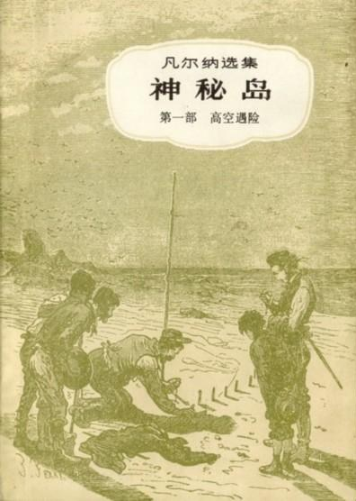

神秘岛

总体观点
《神秘岛》是世界科幻小说鼻祖儒勒·凡尔纳继《格兰特船长的儿女》《海底两万里》之后，为宏大的‘海洋三部曲’画上圆满句号的史诗巨著。小说讲述了1865年美国南北战争期间，五名被困里士满的北方俘虏乘坐破损热气球逃生，在南太平洋一座未知的孤立荒岛（林肯岛）坠落后的惊险拓荒历程。
作品被公认为十九世纪工业革命理性乐观主义的至高赞歌。在工程师赛勒斯·史密斯的科学引领下，这群两手空空的拓荒者不依靠奇迹，而是运用化学、冶金、地质、物理等近代科学原理，在荒岛上造陶器、炼纯铁、配炸药、架设水力磨坊与电报线，把原始荒野改造成繁荣的花园。伴随始终在暗中相助的‘神秘力量’（鹦鹉螺号尼摩船长）的终极揭秘，全书完成了人定胜天与人道主义反殖民理想的壮丽交响。
核心观点
-
1. 近代理性科学作为人类对抗荒蛮生存危机的绝对利器
科学知识不是书斋里的死教条，只要掌握了物质转化的化学与物理规律，两手空空亦能在绝境中重塑整座工业文明。
工程师赛勒斯利用两块怀表玻璃灌入清水制成凸透镜取火，利用海藻灰与脂肪制皂，提取黄铁矿硫酸制成硝化甘油炸开坚固花岗岩水洞。 -
2. 跨阶层团结与分工协作构建的理想共和共同体
工程师、水手、记者、黑人仆人与青年学者之间毫无歧视与特权压迫，各展所长形成坚如磐石的互信友爱集体。
水手潘克洛夫精通航海与农耕，纳布负责后勤与烹饪，赫伯特精通动植物分类，斯皮莱以记者笔头忠实记录，五人如同一人般运转。 -
3. 人性的救赎奇迹：荒野野人艾尔通重返文明社会
曾经背叛同伴、在邻岛沦为茹毛饮血野兽的罪人艾尔通，在林肯岛同伴无私的真诚宽容与关爱下，重新找回了人类的良知与尊严。
艾尔通流落荒岛十二年丧失语言能力，拓荒者们不仅没有遗弃他，反而像对待亲兄弟一样照顾他，艾尔通最终舍身为林肯岛抗击海盗。 -
4. 尼摩船长的悲剧终曲：反抗帝国主义强权的反英雄余晖
失去了一切亲人与祖国的印度达卡尔王子，在鹦鹉螺号中孤傲避世数十年，在生命的暮年依然选择庇护追求自由的正义平民。
海底岩洞中垂死的尼摩船长向工程师一行吐露身世真名，临终前将珍贵的钻石匣子赠予大家建设家园，在火山爆发前安详长眠于海底潜艇中。 -
5. 大自然不可抗拒的伟力与人类文明种子的永恒不朽
虽然林肯岛最终在一场灭顶之灾的火山大爆发中彻底沉入汪洋，但人类依靠智慧创造的友谊与文明精神早已播撒向更广袤的世界。
幸存者乘坐邓肯号返美后，用尼摩船长的遗产在爱荷华州买下一大片辽阔土地，建立起新的‘林肯岛’社区，将开拓精神代代相传。
全书结构
-
第一部 空中遇险：热气球坠海与荒岛生存第一把火
五人逃出里士满乘气球遭遇飓风坠落荒岛，赛勒斯工程师失踪后奇迹获救，凭借科学知识开启原始求生。
赛勒斯用泥土烧结耐火砖建造高炉，冶炼岛上铁矿石制成斧头刀剑，搬入被河水掏空的花岗岩洞穴‘花岗石宫’安居。 -
第二部 遗弃的人：拓荒繁荣与达科达荒岛野人救赎
林肯岛工业大发展，农作物丰收，架设电报线；出海探索塔波尔岛发现退化成野兽的罪犯艾尔通，带回感化重塑。
赫伯特在一件冬衣口袋里意外发现了一粒麦种，经过三年精心播种收获，成功繁育出数万斤小麦建立粮仓。 -
第三部 岛的秘密：海盗战船来袭与鹦鹉螺号现身
凶残海盗船进犯林肯岛，神秘力量用水雷将海盗船瞬间炸毁；拓荒者收到电报指引潜入海底暗洞揭开守护神谜底。
在巨大的玄武岩水下穹顶深处，鹦鹉螺号浮出水面，年迈苍老的尼摩船长坐在沙龙大管风琴旁迎接收留的客人。 -
第四部 尼摩船长之死：达卡尔王子的遗嘱与长眠
尼摩船长向五人讲述自己作为印度反英起义王子的悲壮往事，托付后事后在众人致敬中打开水阀让鹦鹉螺号沉入深海铁坟。
五位拓荒者肃立在艇艏脱帽默哀，看着泛着清冷绿光的鹦鹉螺号携带着一生的骄傲与孤独缓缓滑入万丈深渊底盘。 -
第五部 火山爆发与邓肯号营救：新世界的文明重生
林肯岛火山喷发彻底炸裂沉没，五人绝望困守仅存的一块礁石数日，邓肯号按照尼摩船长留下的漂流瓶信标奇迹营救。
邓肯号船长格兰特之子罗伯特在海平线上升起风帆，历经劫难的拓荒勇士重返故土，在美洲大陆建立新乐园永恒缅怀林肯岛。